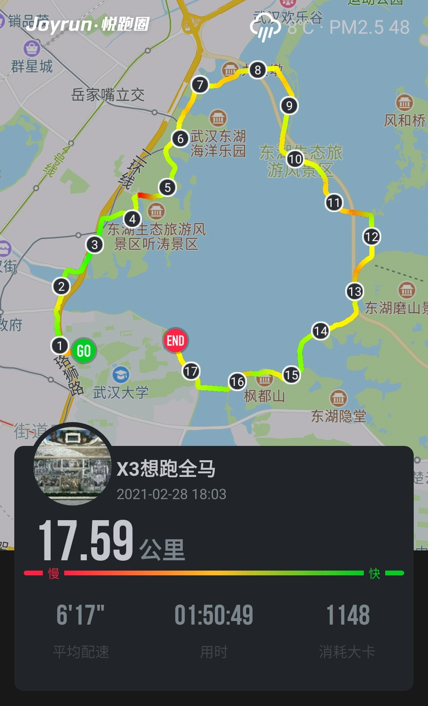
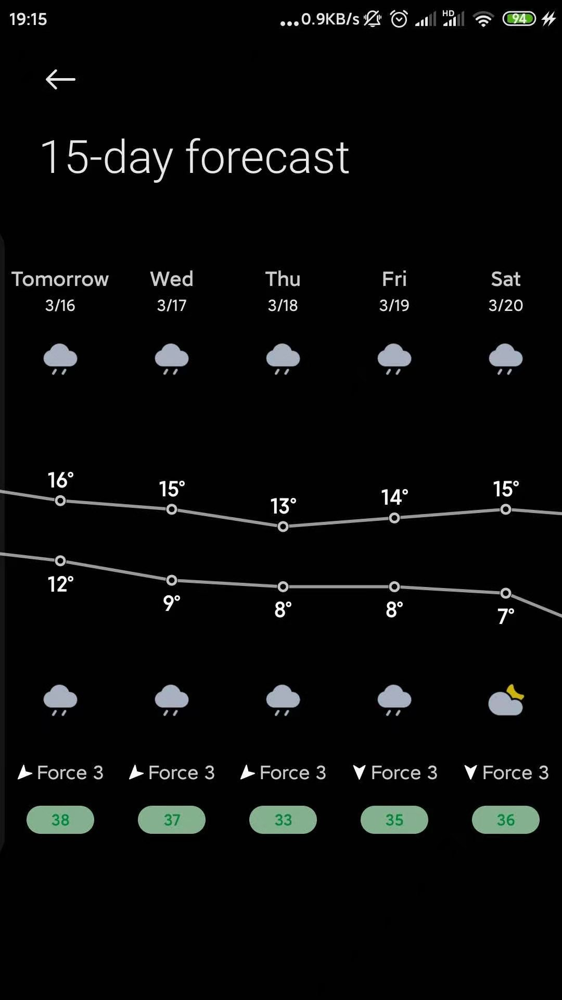
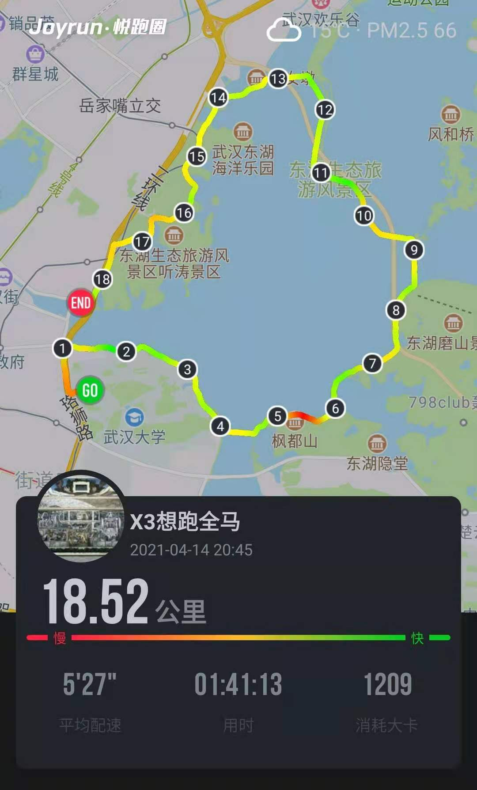
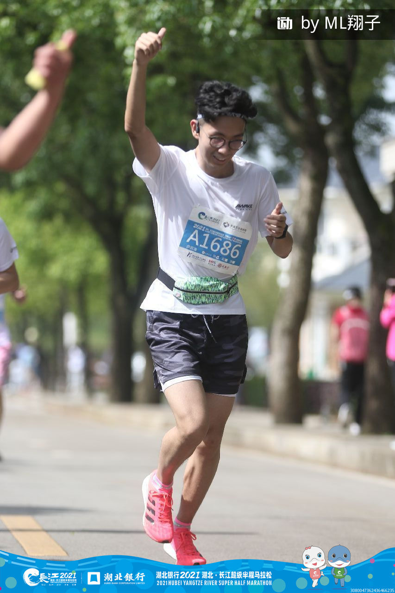
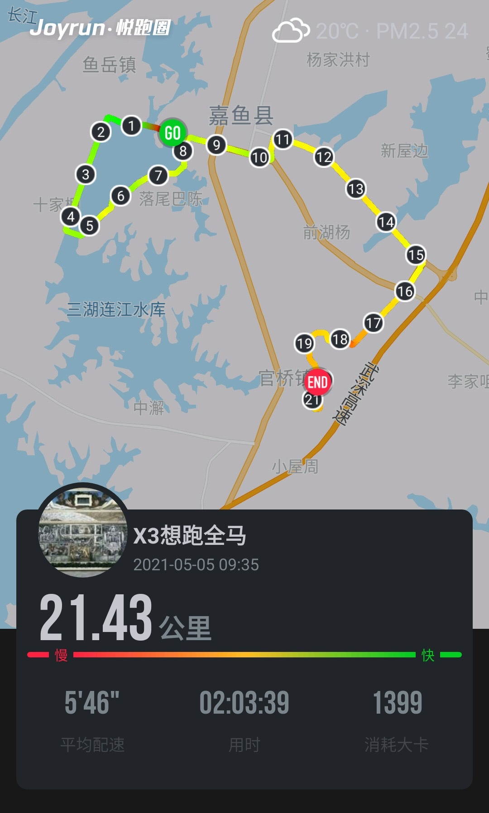
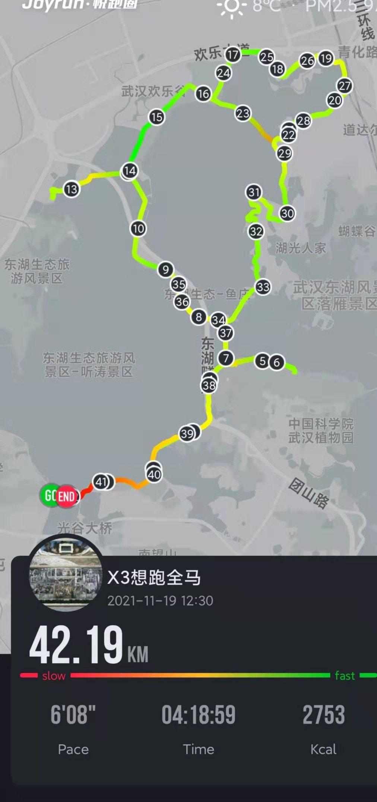

FLAG2021-1-马拉松gogogo
来到2021，立下今年的第一个FLAG，年内持续训练，跑下一场42.193公里的马拉松。（要是能抽中今年汉马就好了）
持续更新ing
2021-02-21开练前状态：
- 63.5KG
- 平均半个月跑次步，5km，配速5'45
跑步日常
Day 2 体能的恢复还是要循序渐进的。连续两日的5km慢跑训练，已经让大腿隐隐酸痛。 这回准备马拉松，可是该更认真，科学的研究跑步了。
Day 3
尽管在外浪了一日，九点半还是换上短裤夜跑。前些日子大腿攒下的酸痛仍未褪去，只得勉强磨蹭着慢跑，约莫630的配速熬过了5km。 跑时庆幸明天总算迎来休息日，但打字的此时此刻，总觉得明天还是该撒丫子奔跑一回才是。
Day 7
跑者up主陆续进驻关注列表。正在学习前掌跑法。 话说，新手总是忍不住买装备[Lol]，下单了puma的ultraride，作为休息日的短距离慢跑鞋。
返校当日，例行来了圈环湖跑。

杂谈几点：
跑鞋
此前买的Reebok Floatride RS ULTK偏大，但一直将就着。这回细细体验，深感自己以前跑时的容忍度之高——内长过长，跑时脚在鞋中“前不着村后不着店”。无后跟港宝提供的锁定感，脚趾又无法被鞋头包裹，跑时就像海盗船在风浪中闯荡😂。也正因鞋码不合适，只得用后掌滚动跑法，一点点磨蹭前行。
雨跑
第一回雨跑，日常的打底裤、短裤、上衣三件套外随手抄起件戴帽的拉链卫衣就出门了。好在有帽子护着，中雨里行进不至于被浇个透心凉。却是雨势渐小后，浑身衣物吸饱水分，将卫衣围在腰间，沉甸甸的。至于鞋袜，早就泡透了，鞋款并不透气，袜子也非专业，只能强忍着湿润的脚感跑完全程。
途中遇到专业跑者，一身装备好不潇洒专业，激起了我研究之心哈。
雨跑装备总结：
- 空顶/全顶帽
- 速干袜
- 不冷的天——皮肤衣
- 寒冷且一定要跑的天——压缩臂套手套腿套来保温
最后留个跑步装备参考链接：
风景与心境
此前看张艺谋的《影》，觉得黑白墨色不过后期特效。真正置身水雾中时，惊觉水墨山水意境并不遥远。
天地茫茫，生机寥寥，除去不多的游人外，偶尔掠过的飞鸟或者水面啪嗒啪嗒的鸭子是不多的生气。
Day 52
武汉的3月属实不讨喜，气温在寒冷与湿冷间徘徊，见不着几日晴天。相应的，跑步的计划也被连绵的雨水打断了。瞧着一周的天气🤦♂️。

来到四月，总算能偶尔逮住几个清爽的日子了。这不，刚入了新装备——韶音AS660骨传导耳机😁，迫不及待出门试用了。（具体使用体验，待过些日子再记录吧）
配合先前购入的跑步腰带和导汗带，越来越像模像样了。一路跑着，甚至收到路过骑手的加油——一个人的跑步路上，暖心的便是短暂的会面与鼓励吧。
第52天，小有进步，跑出了东湖路线的个人距离和速度PB。

Day 73
参加了“长江超级半程马拉松-嘉鱼站”。
第一个半马，来到了咸宁市属的县城——嘉鱼。小地方的马拉松，感觉出动了全城的大妈给跑者加油打气：见到穿旗袍的，穿白色练功服舞扇的，腰系红绸打腰鼓的，当然还少不了跳广场舞的……路线中，甚至包括了公路——水泥路滚烫，热气蒸腾。却也是在这样的道路上，收到路边观众、志愿者的加油，而动力倍增。 惯常都是夜跑，突然大清早起来跑半马着实不适应。早餐吃的晚了，跑的时候一直胀气。没准备帽子，太阳日渐升起，晒得人发晕。仍旧是坚持下来了：前十八公里，听着《细节的力量》，回顾新中国历史。路上瞅见在建的工厂，开垦的农田，感慨建国、发展之不易。后三公里，切换到李克勤和容祖儿的演唱会，试图用大音量激振起疲倦的双腿。

顺利完赛，留下了充足的PB空间。

半马大约成了这县城的节日。结束后的次日，选手大多离去，县城又回归安静。
祈祷能抽中个全马的签吧，感觉630配速蠕动过全马是有希望的哈哈。
Day X 全马
2021.11.19回来补个更新。
此间的日子：五月尝试了越野跑，剁手了二三双跑鞋，回校后加入跑协一同训练，各式抽签不中，靠手速总算抢到合肥全马的资格，踌躇满志备赛，末了遇上疫情，21年全部的赛事通通延期（取消）。
大约那些抽不中的签、跑不了的马，说是不幸，全是因为幸运都用在了遇上位可交心的读者，以及恋人——顺理成章又偷懒了半个月，11月跑量骤降。不过，年头立下的Flag可不能倒了。再拖下去，武汉的寒冬与雾霾可真把人封锁在室内无法出行了。
十三度，阴，AQI128，七点四十出头，开跑。中断了训练，又无正式赛事的补给与呐喊，便打算以6分配巡航，但求安全完赛。
起跑后，发现脑中只剩下不断缩减的数字，空荡荡的，不像村上或他人，奇思妙想不断涌上。
前15公里运动饮料，20公里盐丸，25公里能量胶，30公里盐丸。Pretty Crazy演唱会照常播着，低速慢摇，些许劳累，但精神亢奋。行至35km，自觉状态大好，剩下不过区区7.195公里，说不定还能再加加速——能量胶什么的，不用补给了。
不料跑到39公里处，像是被早早蹲守预瞄的狙击手点中一般，体能撞墙了。
从未跑过如此漫长的3公里，
似油料耗尽的柴油机，哼哧哼哧的发动机空响着，转速却越来越慢。步伐逐渐收窄，步频渐渐降低。头脑是清醒的，顺着神经元和突触，不断抽打、命令着双腿“给我动起来！”，双腿却不听使唤。不得已，只靠尽量倾斜的上身，甩着手臂，嘴里骂骂咧咧，努力跑过最后的距离——如果那样子也算跑的话。
最后二百米是最难忘的。口中断断续续念叨着各种精神力量源泉，Mamba Mentality，☀等等，拖着步子移动。双腿是全全然抽筋了的，从下到上感觉那筋像古筝的弦，不停抖动着，又感觉仿佛有条小蛇在腿上上下窜动。
然而，话说回来，总归是顺利完赛的了——一人跑的全马。愿能坚持冬训，愿明年能，真正的踏上赛道跑一回啊。

P.S. FLAG拔了，这篇大约到此停笔刚好。
P.S.2 信念约是累时瞅见腕上的手链，幸福约是赛后收到庆祝的花束。